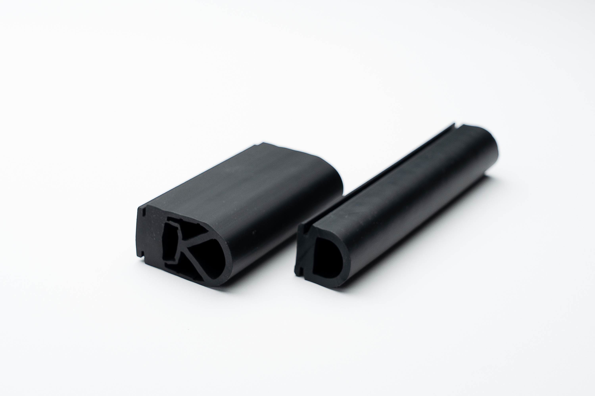
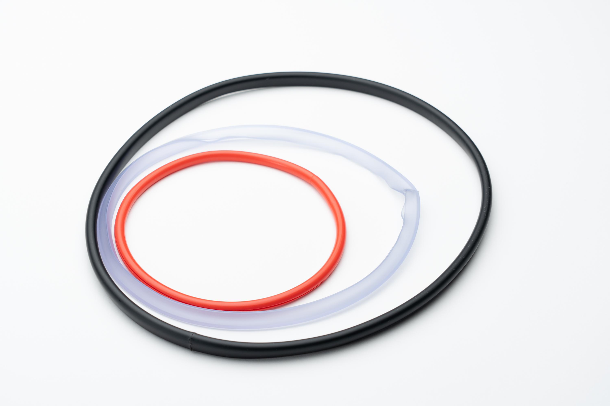
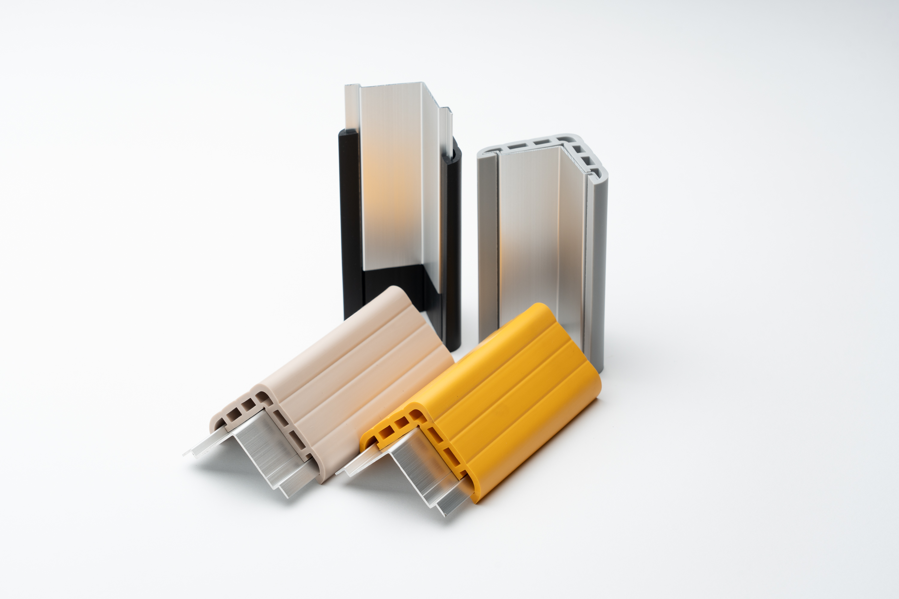

ドアガスケットを中心に、感圧スイッチ・異型押出・オリジナル緩衝材まで、軟質塩ビ（PVC）・エラストマー系押出成形技術を核に多彩な製品を展開しています。


家庭用冷蔵庫・業務用冷蔵庫・医療用冷蔵庫（薬品庫・検体保管庫）・理化学機器など幅広い用途に対応するマグネットガスケット。カスタム断面の共同開発から既存品の流用提案、小ロット品まで対応します。

樹脂押出からアセンブリまで一貫生産。半導体工場のロボットに搭載し、人やモノを衝撃から守るセーフティセンサー。



1968年の創業以来、ノムラ化成が磨き続けてきたのが軟質塩ビ（PVC）・エラストマーの異型押出技術です。硬質樹脂を得意とする同業他社が多い中、私たちは柔らかく・しなやかな素材の成形に特化。複雑な断面形状・発泡・中空・複合断面まで、カスタム金型の設計から量産まで一貫対応します。テーブルエッジ・スロープ・緩衝材・シール材・配線保護カバーなど幅広い用途に展開しています。


「安心ガード」「コーナー君」など、生活のあらゆる場面に欠かせない緩衝材を自社開発。駐車場の支柱カバー、工事現場の養生材、介護施設のコーナー保護など多彩なシーンで活躍。安全で快適な暮らしをサポートします。
家庭用・業務用・医療用冷蔵庫や理化学機器向けのマグネットガスケット（ドアパッキン）について、カスタム断面設計から小ロット供給まで、50年以上の製造実績をもとにご提案します。
お客様の機器に合わせた専用ドアパッキン断面を、設計段階から一緒に作り上げます。
ゼロから開発せず、既存のドアガスケット断面形状から最適なものを選ぶことで、コストと納期を大幅に削減できます。
多品種・少量のドアガスケット（ドアパッキン）を安定供給。国内3拠点から必要な数量を必要なタイミングでお届けします。
「こんな断面形状は作れるか」「このロット数で対応可能か」——どんなご相談でも、50年の経験を持つ技術者が丁寧にお答えします。